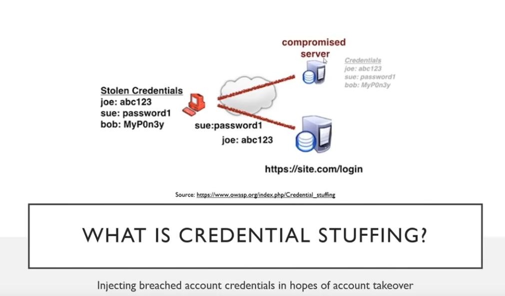

Credential stuffing is a type of cyberattack where stolen account credentials typically consisting of lists of usernames and/or email addresses and the corresponding passwords (often from a data breach) are used to gain unauthorized access to user accounts through large-scale automated login requests directed against a web application. Unlike credential cracking, credential stuffing attacks do not attempt to brute force or guess any passwords - the attacker simply automates the logins for a large number (thousands to millions) of previously discovered credential pairs using standard web automation tools like Selenium, cURL, PhantomJS or tools designed specifically for these types of attacks such as: Sentry MBA, SNIPR, STORM, Blackbullet and Openbullet.
https://youtu.be/T0fEjnc_oes